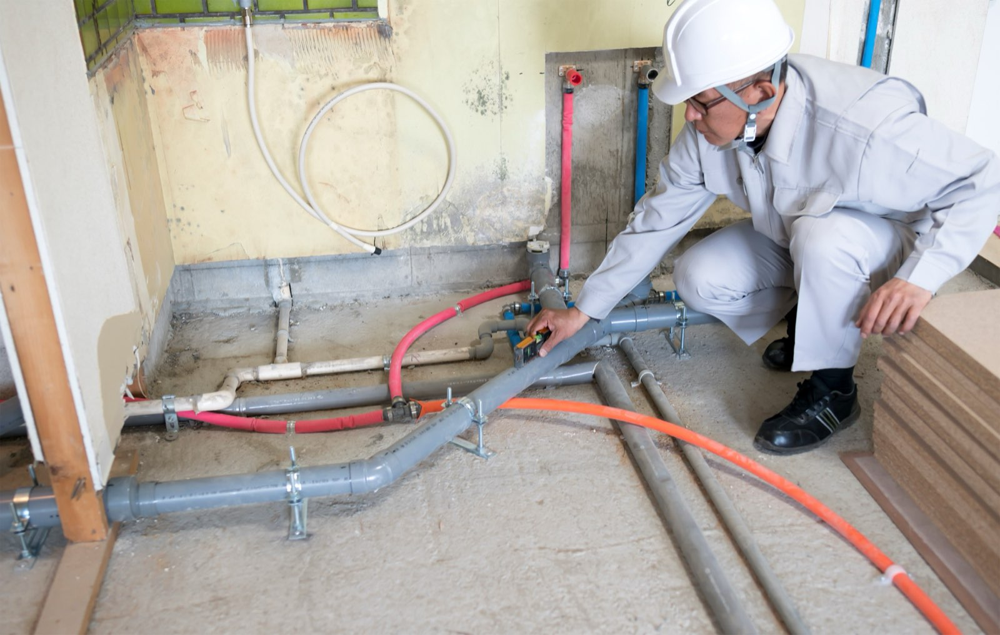

01
見逃さない、徹底した品質管理
給排水設備の施工においては、給水・給湯管の水圧テストや、水がスムーズに流れるための「排水勾配」の確認を厳格に実施しています。衛生器具の設置後も、取付状況の確認や通水・漏水チェックを徹底し、安心してお使いいただける状態でお引き渡しします。
水圧テスト
排水勾配の確認
通水・漏水チェック

お客様からの「信頼」を何よりも大切に、私たちは一つひとつの現場で誠実な施工を実践し、日々技術の研鑽に励んでいます。
給排水設備の施工においては、給水・給湯管の水圧テストや、水がスムーズに流れるための「排水勾配」の確認を厳格に実施しています。衛生器具の設置後も、取付状況の確認や通水・漏水チェックを徹底し、安心してお使いいただける状態でお引き渡しします。
建物は完成してからが本番です。新築工事の段階から、将来的な建物のライフサイクルや引き渡し後の保守・点検（メンテナンス）がスムーズに行えるよう、先々のことまで配慮した丁寧な配管施工を行っています。
